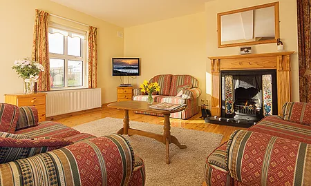
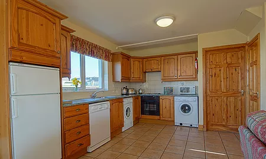
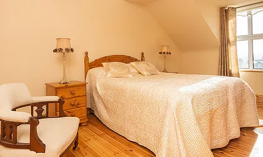
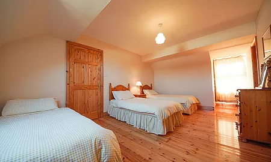

Living Room: All living rooms have large flat screen TV, DVD player and basic TV stations. While you also benefit from the light penetrating through our conservatory.
Kitchen: All the mod cons are included: Oven, dishwasher, microwave, fridge-freezer. And our dining area can seat up to 10 people- ideal for a birthday weekend!
Bedroom: The Master Bedroom comes with walk in wardrobes and its own en-suite. Fresh bed linen and towels are also provided
Twin Room: Our twin rooms have ample space for 2 persons. On request we can add an additional travel bed/cot for children
